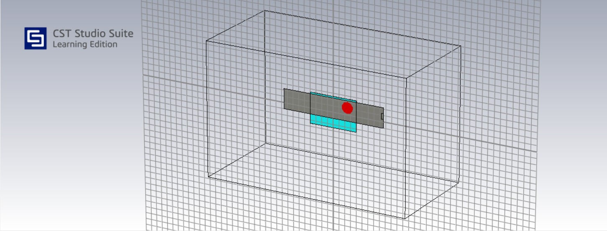
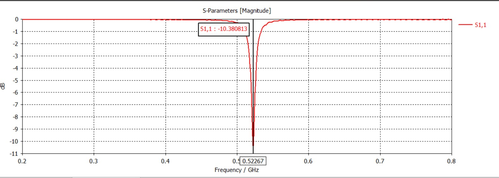
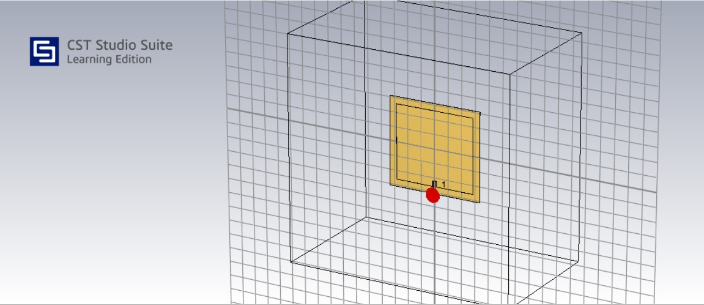
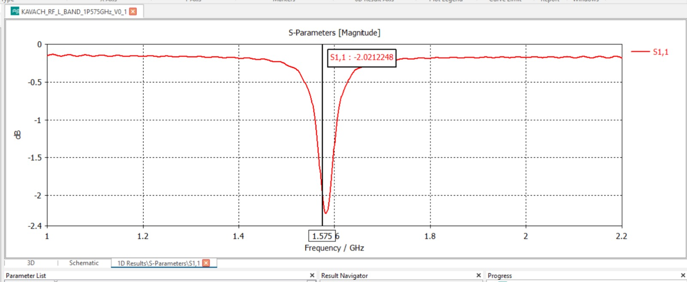

04 / Electromagnetic Validation
Simulation
CST Studio Suite is being used to investigate the electromagnetic behaviour of the proposed antenna geometries before physical fabrication. The current development covers UHF and L-band configurations.
Configuration 01
UHF
Target: 446 MHz

CST electromagnetic model — UHF

Simulated S11 response — UHF
Target Frequency
446 MHz
Simulated Resonance
522.67 MHz
Simulated S11
−10.38 dB
Current status:
The simulated resonance is shifted from the 446 MHz project target.
Further frequency retuning is therefore required.
Configuration 02
L-band
Target: 1.575 GHz

CST electromagnetic model — L-band

Simulated S11 response — L-band
Target Frequency
1.575 GHz
Simulated Resonance
~1.5755 GHz
S11
See simulation plot
Current status:
The simulated resonance is close to the intended project target.
Further impedance and geometry optimization remains part of the
development process.
Development Workflow
From Simulation to Validation
Antenna Geometry
↓
Material Definition
↓
Feed / Port Definition
↓
CST Electromagnetic Simulation
↓
S11 / Resonance Analysis
↓
Geometry Optimization
↓
Prototype Fabrication
↓
VNA Measurement
The UHF and L-band values shown above are project simulation results.
Physical prototype measurements have not yet been completed.